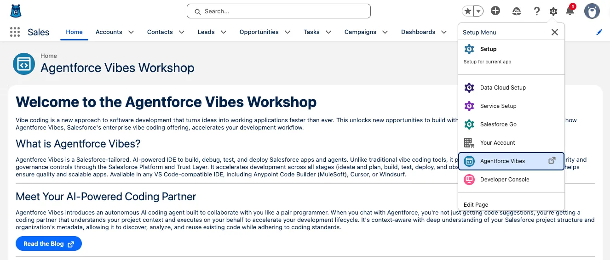
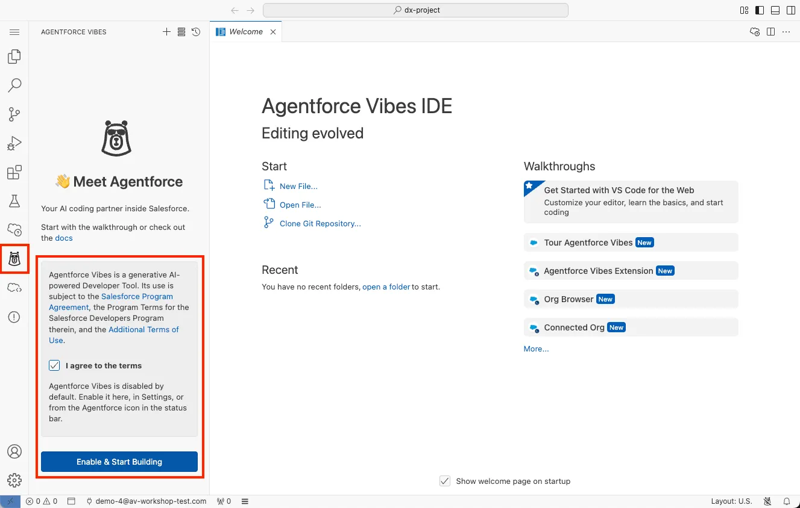
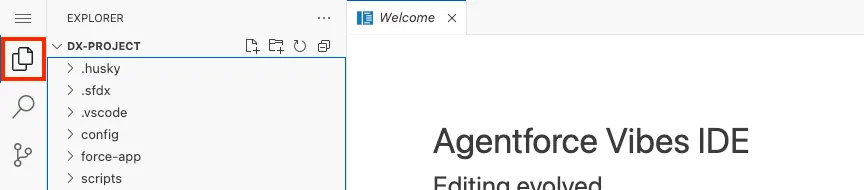
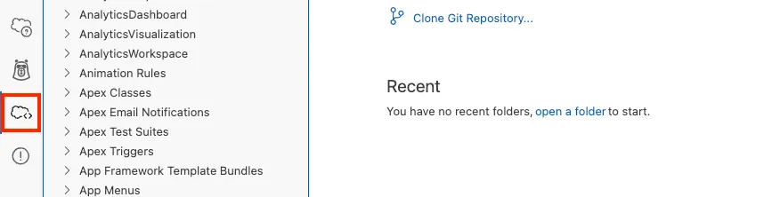
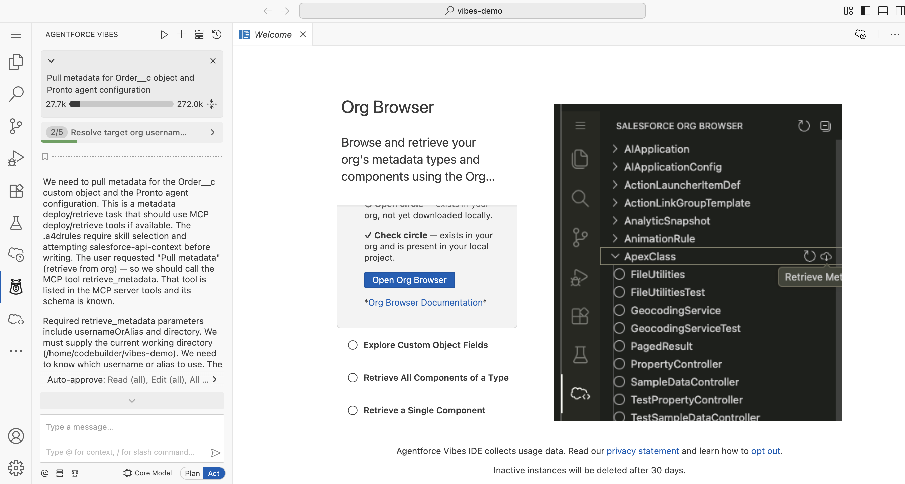

Extend Pronto with Agentforce Vibes
Learn how to use Agentforce Vibes within Salesforce to build and deploy Apex actions for your Pronto agent using natural language
Workshop Overview
In this workshop, you'll learn how to use Agentforce Vibes — Salesforce's enterprise-grade AI-powered development environment — to extend your Pronto agent with custom Apex actions. You'll work directly within your Salesforce org to build, deploy, and test new agent capabilities using natural language prompts.
What You'll Learn
- How to launch and configure Agentforce Vibes within your Salesforce org
- How to use natural language to generate production-ready Apex code
- How to deploy and test Apex actions for Agentforce agents
- How to create and configure subagents within your Pronto agent
- How to integrate custom actions into subagents
What You'll Build
Two complete features for your Pronto agent:
- Order Status Action — Look up order information and delivery dates
- Loyalty Subagent — A dedicated subagent with a custom action to retrieve customer loyalty points
Duration
~45 minutes
Level
Intermediate
Prerequisites
Before starting this workshop, ensure you have:
- Salesforce Org Access — A Salesforce org with Agentforce enabled
- Pronto Agent — A configured Pronto agent (complete the core Agentforce Builder Workshop first)
- Order Object — The
Order__ccustom object with fields:Order_Number__c,Status__c, andEstimated_Delivery_Date__c(used in Steps 3-4) - System Permissions — Ability to create and deploy Apex classes, create subagents, and modify Agentforce agents
Launch Agentforce Vibes
What is Agentforce Vibes?
Agentforce Vibes is Salesforce's enterprise-grade AI-powered development environment. Unlike basic code assistants that generate snippets, Vibes understands your org's metadata, follows established patterns, and works as an autonomous coding partner that can plan, build, test, and deploy through natural language interaction.
Access Vibes in Your Salesforce Org
- Log in to your Salesforce org at login.salesforce.com
- From Setup, enter Agentforce Vibes in the Quick Find box
- Click Agentforce Vibes to open the IDE interface

- Accept the terms and conditions if this is your first time launching Vibes
- Wait for Vibes to initialize — it will automatically create a Salesforce DX project connected to your org

Verify Your Environment
Once Vibes loads, you'll see a VS Code-compatible interface. Take a moment to familiarize yourself with the key areas:
- Activity Bar (left) — Contains icons for Explorer, Search, Source Control, and Extensions

- Org Browser — Shows your connected org and metadata (cloud icon in Activity Bar)

- Agentforce Chat — The AI assistant panel on the right side
- Terminal — Accessible at the bottom for running CLI commands
- Status Bar — Shows your org connection status at the bottom
Verify your environment is ready:
- ✓ The Org Browser shows your connected org name
- ✓ The Agentforce chat panel is visible on the right
- ✓ The terminal is accessible at the bottom
- ✓ You can see your org's metadata in the Explorer
Configure Your Salesforce Project
Before building with Vibes, you need to enable key features in your Salesforce org and configure your development environment. This ensures Vibes can communicate with your org and access the right metadata.
Enable MCP Service (Beta)
MCP (Model Context Protocol) allows Vibes to connect to your Salesforce org using a standardized AI protocol.
- In your Salesforce org, navigate to Setup
- In the Quick Find box, search for "User Interface"
- Click User Interface in the results
- Scroll down and check the box for "Enable MCP Service (Beta)"
- Click Save
Activate Salesforce MCP Servers
MCP Servers provide specific capabilities to Vibes, like reading objects or accessing Salesforce APIs.
- In Setup, search for "MCP Servers" in Quick Find
- Click MCP Servers
- Under the Salesforce Servers tab, you'll see available servers
- Activate these two servers by clicking the toggle or checkbox:
- sobject-all — Provides access to all standard and custom objects
- salesforce-api-context — Provides Salesforce API context and metadata
- Verify both servers show as "Active" or "Enabled"
Configure MCP Servers in Vibes
Now that MCP is enabled in your org, configure it within the Agentforce Vibes interface.
- In the Agentforce Vibes window, look for the Agentforce Vibes Sidebar (usually on the left)
- Click Manage MCP Servers or find the MCP Server management section
- You should see a list of available MCP servers
- Toggle on or activate all three servers:
- sobject-all
- salesforce-api-context
- Any additional Salesforce-related servers shown
- Click the configuration icon (gear or settings) next to each server to verify available tools
Open the Agentforce Chat Panel
With MCP configured, you're ready to start interacting with Vibes. Let's open the AI chat interface where you'll give instructions.
Locating the Agentforce Chat Interface
The Agentforce chat is your AI assistant within Vibes. Here's how to find it:
Locate the Agentforce Chat Interface
Here's the Agentforce Vibes interface showing where to find the chat icon and chat panel:

- Click the Agentforce Vibes icon (cloud icon with sparkles) in the Activity Bar on the left
- The chat panel opens showing the conversation history
- Type your prompts in the input box at the bottom that says "Type a message..."
- Press Enter or click the send arrow to submit
Give Vibes a Complete Plan
Instead of giving Vibes individual prompts for each step, you can provide a comprehensive plan that covers the entire workshop. This lets Vibes understand the full context and execute all steps efficiently.
In the Agentforce chat input box at the bottom of the chat panel, copy and paste this complete plan:
I need to extend my Pronto agent with custom Apex actions and a new Loyalty subagent. Please create a plan for:
1. Pull metadata from my org:
- Order__c custom object (with Order_Number__c, Status__c, Estimated_Delivery_Date__c fields)
- Pronto_Service_Agent configuration
2. Create OrderStatusAction Apex class:
- Invocable from Agentforce (@InvocableMethod)
- Input: order number (String)
- Query Order__c using Order_Number__c field
- Return: order status (Status__c) and estimated delivery date (Estimated_Delivery_Date__c) as Strings
- Include error handling for orders not found
- Create test class with 100% coverage
- Label the invocable method as "Get Order Status"
3. Deploy OrderStatusAction to my org
4. Create LoyaltyPointsAction Apex class:
- Invocable from Agentforce (@InvocableMethod)
- Input: customer email (String)
- Return: random number of loyalty points between 100 and 10000 (Integer)
- Label the invocable method as "Get Loyalty Points"
- Create test class with 100% coverage
5. Deploy LoyaltyPointsAction to my org
After deployment, I'll manually:
- Create a Loyalty subagent in Agent Builder
- Add the Get Loyalty Points action to the Loyalty subagent
- Test both actions
Please create a plan first, then I'll review it before you proceed.- Better Context: Vibes understands the full scope and can make better architectural decisions
- Fewer Prompts: One comprehensive prompt instead of multiple back-and-forth exchanges
- Consistent Code: Vibes sees both Apex classes together and can ensure consistency
- You Stay in Control: Vibes creates a plan first, you review and approve before execution
Alternative: Step-by-Step Approach
If you prefer to work step-by-step (useful for learning), you can break this into individual prompts. Start with pulling metadata:
Pull metadata for Order__c object and Pronto_Service_AgentPronto_Service_Agent is the developer name for the Pronto agent. Using the exact developer name helps Vibes identify the correct agent configuration metadata. If your Pronto agent has a different developer name, substitute it in the prompt.
Press Enter or click the Send button to submit the prompt.
Choose Retrieval Option
Vibes will ask you to choose how to retrieve the metadata. You'll see a message like:
Choose retrieval option: run retrieve_metadata now using username <your-org> with no manifest (tool will auto-determine components), or should I create and use an explicit package.xml that includes Order__c and an identified Pronto agent metadata type?
Reply "A" for no-manifest or "B" to provide/confirm metadata type for the agent.Choose Option A by typing:
AAiApplicationConfig), which can be complex for first-time users.
Confirm Agent Metadata Type
After selecting Option A, Vibes may ask you to specify the exact metadata type for the Pronto agent:
Source-tracking is disabled for the org, so I must supply a manifest. Please confirm the exact metadata type for the "Pronto agent configuration" you want retrieved (examples: AiAgent, Agent (custom type), Agent__mdt (custom metadata), or something else).
If you don't know, reply "I don't know" and I will attempt retrieving Order__c plus common Agent metadata types (AiAgent, CustomMetadata named Pronto*, and any metadata type named Agent*).
Which do you prefer?Respond with "I don't know" to let Vibes automatically try common agent metadata types:
I don't knowWait for Retrieval
Vibes will now retrieve:
- The
Order__ccustom object definition and fields - Your Pronto agent configuration
- Related permission sets and profiles
- Existing Apex classes and Lightning Web Components
Explore the Agentforce Vibes Sidebar
The Agentforce Vibes sidebar contains important controls and settings. Let's familiarize yourself with the key features.
- Look for the Agentforce Vibes Sidebar (typically on the left side of the Vibes interface)
- You'll see several important sections:
- MCP Servers — Shows connected servers and their status
- Auto-approve — Controls whether Vibes automatically executes actions or asks for confirmation
- Context Settings — Adjusts how much context Vibes uses
- Skills Tab — Shows built-in instruction sets (like Salesforce Skills) that guide Vibes behavior
- Rules Tab — Contains persistent guidance rules (including default expert rules)
a4v-expert-global-rule.md file with best practices for Salesforce development.
Review Auto-Approve Settings
Control how Vibes executes actions in your org.
- In the Agentforce Vibes Sidebar, find the Auto-approve section
- Review the current settings:
- Auto-approve enabled — Vibes executes commands automatically without asking
- Auto-approve disabled — Vibes asks for confirmation before executing (safer for learning)
- For this workshop, we recommend keeping auto-approve disabled so you can review each action before it runs
Verify MCP Server Activation in Vibes
Double-check that your MCP servers are properly activated within the Vibes interface.
- In the Vibes Sidebar, locate the MCP Servers section
- You should see the three Salesforce MCP servers listed:
- sobject-all
- salesforce-api-context
- (Possibly a third Salesforce-related server)
- Verify each server shows as Active or has a green indicator
- Click the configuration icon (⚙️ or settings) next to each server to view available tools
- You should see tools like:
sf project deploysf project retrievesf org display- Other Salesforce DX commands
Enable Local Development (Optional)
This feature allows you to preview Lightning components locally. While optional for this workshop, it's useful for advanced development.
- At the bottom of the Vibes window, find the status bar
- Look for an "Open Default Org in Browser" button or your org name
- Click it to open your Salesforce org in a browser
- In your org, navigate to Setup
- Search for "Local Dev" in Quick Find
- Click Local Development Setup
- Enable Local Development
- Click Save
Verify Metadata Retrieval
After the pull completes, check your Explorer panel to confirm Vibes successfully retrieved your org's metadata:
- In the Explorer sidebar (left side), expand
force-app/main/default/ - Navigate to
objects/Order__c/and verify you see:Order__c.object-meta.xml(object definition)fields/folder with field definitions- Field files like
Order_Number__c.field-meta.xml,Status__c.field-meta.xml, etc.
- Check for agent configurations under
aiApplicationConfigs/(if available) - Verify you see the Salesforce DX project structure:
sfdx-project.jsonin the rootforce-app/main/default/directory structure
- ✓ MCP Service enabled in your org
- ✓ MCP servers activated and connected
- ✓ Project metadata retrieved from your org
- ✓ Vibes understands your Order__c object and Pronto agent
You're now ready to start building Apex actions with natural language!
Generate the Apex Action
Use Natural Language to Build
Now comes the powerful part — you'll use natural language to generate a production-ready Apex action. Vibes will create a plan, let you review it, then build the complete, tested code.
In the Agentforce Vibes chat, enter this prompt:
I need to create an Apex action for Agentforce. Please create a plan for:
An Apex class called OrderStatusAction that is invocable from Agentforce. It should:
- Accept an order number as a string input
- Query the Order__c object for a matching record using the Order_Number__c field
- Return the order status (Status__c) and estimated delivery date (Estimated_Delivery_Date__c) as output strings
- Include proper error handling for when no order is found
- Include a test class with 100% coverage
Please create a plan first, then I'll review it before you build.Review and Approve the Plan
Vibes will present a plan showing:
- The Apex class structure with
@InvocableMethodannotation - Input and output wrapper classes
- SOQL query approach
- Error handling strategy
- Test class outline
Review the plan and respond:
Looks good, please proceed with building the code.Review the Generated Code
Vibes will generate several files. Review them to understand what was created:
- OrderStatusAction.cls — The main Apex class with
@InvocableMethodannotation - OrderStatusActionTest.cls — Complete test class with assertions
- Vibes automatically follows Salesforce best practices and your org's coding patterns
Order_Number__c, Status__c, and Estimated_Delivery_Date__c fields. The method should be properly annotated with a descriptive label for Agent Builder.
Request Modifications (Optional)
If you need changes, simply ask Vibes in natural language:
Add a return value for customer email
Handle the case when no order is found
Update the method description to be more specificDeploy to Your Org
Deploy with Vibes
Once you're satisfied with the generated code, deploy it directly from Vibes to your org.
In the Agentforce chat, tell Vibes to deploy:
Deploy the OrderStatusAction class and test class to my orgVibes will:
- Run the Salesforce CLI command
sf project deploy start - Execute the test class to verify coverage
- Report deployment status and any errors
- Show you the deployment results in the terminal
Verify Deployment
Check that your deployment succeeded:
- Look for "Deploy Succeeded" message in the terminal
- Verify test coverage is 100%
- Note the component IDs for the deployed classes
Create a Loyalty Subagent
What are Subagents?
Subagents are specialized agents within your main Pronto agent that handle specific domains or tasks. They have their own instructions, actions, and knowledge, allowing you to organize complex agent behaviors into focused, manageable components.
Create the Loyalty Subagent
- Navigate to Setup in your Salesforce org
- Search for Agentforce Agents in Quick Find
- Open your Pronto Agent
- In the agent canvas, look for the Subagents or Topics section
- Click New Subagent or Add Topic
- Configure the subagent:
- Name: Loyalty
- API Name: Loyalty
- Description: Specializes in customer loyalty program inquiries, including points balance lookups, rewards information, and program benefits. Routes queries about loyalty points, rewards redemption, and membership tiers.
- Click Finish or Save to create the subagent
Add Subagent Instructions
Instructions define how the Loyalty subagent should behave and when to use its actions. Clear instructions ensure accurate routing and helpful responses.
You help customers with loyalty program questions.
When a customer asks about their loyalty points balance, use the Get Loyalty Points action. Ask for their email address if they haven't provided it.
Program details:
- Customers earn 1 point per dollar spent
- 100 points = $1 off future orders
Be friendly and enthusiastic about helping customers with their rewards. If they ask about order status or delivery, let them know that's handled by a different part of the system.- Open your newly created Loyalty subagent
- Find the Instructions field
- Paste the instructions above into the field
- Click Save
Add Loyalty Points Action
Generate the Loyalty Points Action
Now you'll use Vibes again to create a custom action for retrieving loyalty points. This demonstrates how quickly you can extend your agent with new capabilities using the same plan-first workflow.
Return to Agentforce Vibes and enter this prompt:
I need another Apex action for the Loyalty subagent. Please create a plan for:
An Apex class called LoyaltyPointsAction that is invocable from Agentforce. It should:
- Accept a customer email as a string input
- Return a random number of loyalty points between 100 and 10000 as an integer output
- Label the invocable method as "Get Loyalty Points"
- Include a test class with 100% coverage
Please create a plan first, then I'll approve it.Once Vibes presents the plan, review it and respond:
Looks good, build it.Deploy the Loyalty Action
Once Vibes generates the code, deploy it:
Deploy the LoyaltyPointsAction class and test class to my orgWait for Vibes to confirm successful deployment.
Add Action to Loyalty Subagent
Now wire the action into your Loyalty subagent:
- Return to Agent Builder in your Salesforce org
- Open your Pronto Agent
- Navigate to the Loyalty subagent you just created
- In the subagent view, click the Actions tab
- Click New Action
- Select Apex as the action type
- Search for and select LoyaltyPointsAction
- Verify the action label is Get Loyalty Points
- Review the Input/Output fields:
- Input: Customer Email (String)
- Output: Points (Integer)
- Click Save
Test the Loyalty Subagent
Preview in Agent Builder
Test your new Loyalty subagent and its action using Agent Builder's preview feature.
- In Agent Builder, ensure you're viewing your Pronto Agent
- Click the Preview button in the top right
- Wait for the preview chat interface to load
- In the chat input, type a test query:
How many loyalty points do I have? My email is customer@example.comVerify the Response
Check that your Loyalty subagent is working correctly:
- The Pronto agent should route your query to the Loyalty subagent
- You should see an indication that the Get Loyalty Points action was called
- Click Interaction Details or View Trace to see the full execution flow
- Verify the response includes:
- Recognition that this is a loyalty points query
- A number between 100 and 10,000 (your loyalty points)
- A friendly message from the Loyalty subagent
- In the trace, confirm the query was routed to the Loyalty subagent (not the main agent)
- "What are my loyalty points?" (without providing email - should ask for it)
- "Check my rewards balance for john@example.com"
- "How does the loyalty program work?" (should get general info, not call the action)
Test Multiple Capabilities
Verify that your Pronto agent can handle different types of queries:
1. What's the status of order ORD-12345?
2. How many loyalty points does sarah@example.com have?
3. When will my order arrive?The agent should correctly route:
- Order queries → Main agent (using OrderStatusAction from earlier steps)
- Loyalty queries → Loyalty subagent (using LoyaltyPointsAction)
Troubleshooting
If the Loyalty subagent doesn't work as expected:
- Action not called: Check the Loyalty subagent instructions and ensure they clearly describe when to use the Get Loyalty Points action
- Not routing to subagent: Review the subagent instructions and make sure keywords like "loyalty" and "points" are mentioned
- Error response: Review the Interaction Details for error messages. Check that LoyaltyPointsAction deployed successfully
- Wrong subagent activated: Refine the subagent instructions to be more specific about when it should activate
🎉 Congratulations!
You've successfully completed the workshop and learned how to extend Pronto agents using Agentforce Vibes.
What You Accomplished
You successfully:
- ✓ Launched and configured Agentforce Vibes in your Salesforce org
- ✓ Retrieved project metadata to provide context to Vibes
- ✓ Generated two production-ready Apex actions using natural language
- ✓ Deployed OrderStatusAction and LoyaltyPointsAction to your org
- ✓ Created a Loyalty subagent with custom instructions
- ✓ Integrated the Get Loyalty Points action into your subagent
- ✓ Verified agent routing and action execution in preview mode
Next Steps
📤 Publish Your Code to GitHub
Want to version control your Vibes-generated code, deploy it to other orgs, or share it with your team?
- Set up Salesforce CLI and authenticate with your org
- Retrieve code from your Salesforce org
- Create a Salesforce DX project locally
- Push your code to GitHub for version control
- Deploy to other Salesforce orgs
Extend Your Learning
Try these additional challenges to deepen your Vibes and subagent expertise:
- Connect to Real Data — Create a Loyalty__c custom object and update LoyaltyPointsAction to query real records instead of random numbers
- Add More Subagents — Create a "Support" subagent that handles returns and refunds
- Enhance the Loyalty Action — Add the ability to redeem points or check reward tier status
- Build Cross-Subagent Flows — Enable the Loyalty subagent to award bonus points when orders are placed
- Add Knowledge Articles — Attach knowledge base articles to your subagents for FAQ responses
Continue Building with Vibes
Explore more advanced capabilities:
- Complex Actions — Generate Apex that queries multiple related objects (Orders, Contacts, Accounts)
- External Integration — Build callouts to external loyalty systems or shipping APIs
- Batch Processing — Create scheduled jobs to update loyalty points nightly
- Custom UI — Generate Lightning Web Components for a loyalty dashboard
- Multi-Action Workflows — Chain multiple actions together in a single conversation